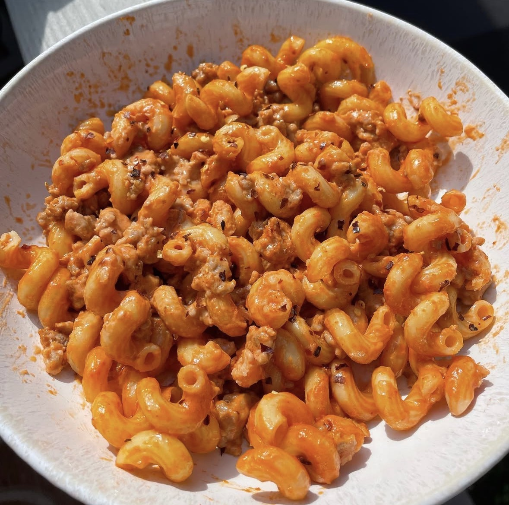

Home
Spicy Vodka Sausage Pasta

Description
A little cream sherry enriches a tasty mix of fresh tomatoes,
garlic, basil, mint, olive oil and chile pepper flakes.
Toss everything together with hot pasta and Asiago and
fontina cheeses. "At the peak of summer tomato harvest,
it doesn't get any better than this!" says Gayle Wagner.
Ingredients
- 1 pound of italian sausage
- 1 pound of pasta
- 1/3 cup of tomato paste
- 2 cups of heavy cream
- 1 tablespoon of butter
- 1/2 tablespoon of salt
- 1/2 tablespoon of pepper
- 1/2 tablespoon of garlic/onion powder
- 1/3 cup of spicy truffle sauce
Steps
- Cook the Pasta
- Bring large pot of salted water to boil.
- Cook pasta using package instructions.
- Cook the Sausage
- Over medium heat, add a little oil and cook the italian sausage.
- Break sausage apart and continue until fully cooked.
- Remove sausage from pan to make the sauce in the same pa.
- Build the Sauce
- Add 1 tablespoon of butter to pan.
- Stir in tomato paste and cook for 2-3 minutes to caramelize and deepen flavor.
- Pour in heavy cream and simmer sauce on low heat until it thickens.
- Add garlic/onion power, salt, pepper, and spicy truffle sauce. Stir well.
- Taste and adjust seasoning or heat as needed.
- Combine
- Add cooked sausage to the sauce and stir well.
- Add cooked pasta to the sauce and toss evenly.